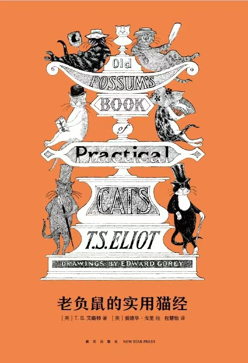
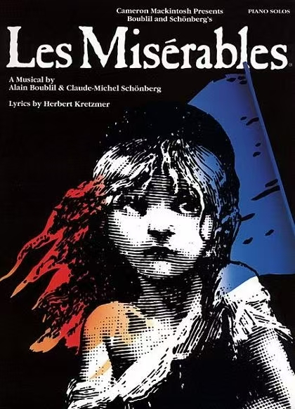

经典音乐剧原作改编
许多经典音乐剧都源自文学作品、电影或真实事件，改编后的作品既保留核心内核，又融入舞台艺术特色。
《猫》：从诗集到奇幻舞台

《猫》改编自T·S·艾略特的儿童诗集《老负鼠的猫经》，诗集原本是艾略特写给朋友孩子的趣味读物，记录了各种猫的性格与故事。
安德鲁·劳埃德·韦伯偶然发现诗集后，被猫的独特个性吸引，耗时数年将其改编为音乐剧。为了丰富剧情，他新增了“选领者大会”的主线，让原本独立的猫故事串联起来，并为“魅力猫”创作了《Memory》唱段，成为全剧的情感核心。
《悲惨世界》：文学史诗的舞台重生

音乐剧《悲惨世界》改编自雨果的同名长篇小说，小说以法国大革命为背景，讲述了冉·阿让的救赎之路，涵盖正义、爱情、革命等多重主题。
改编时，主创团队保留了小说的核心人物与主线剧情，将复杂的叙事通过唱段呈现。为了贴合舞台节奏，简化了部分支线情节，同时强化了合唱场景，让《Do You Hear the People Sing》等唱段成为传递革命精神的载体，使文学史诗转化为震撼的舞台体验。
音乐剧制作核心流程
1. 选题与改编：确定原作素材，完成剧本改编，明确剧情主线与核心主题。
2. 音乐创作：作曲家根据剧情风格创作唱段，搭配歌词形成完整原声。
3. 选角与排练：选拔演员，进行数月的声乐、舞蹈、台词排练。
4. 舞美设计：打造舞台布景、服装、灯光，适配剧情氛围。
5. 试演与调整：进行多场试演，根据反馈优化剧情、音乐与舞台呈现。
6. 正式首演：在百老汇、西区等核心舞台正式演出，开启巡演或长期驻演。